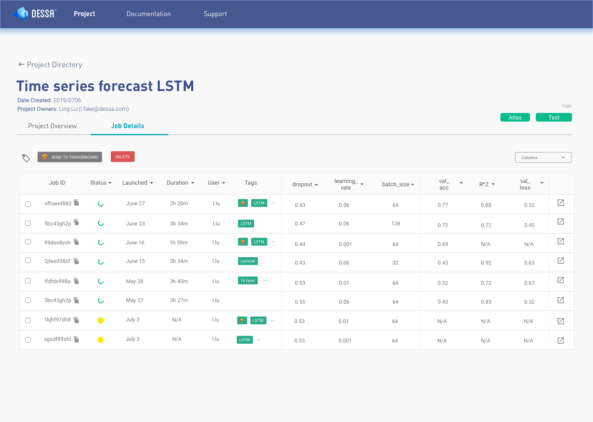

Open sourcing Atlas - tools for Applied Deep Learning Development
Excited to share that, my team just recently open sourced Atlas. Atlas is a flexible Machine Learning platform that consists of a Python SDK, CLI, GUI & Scheduler to help Machine Learning Engineering teams dramatically reduce the model development time & reduce effort in managing infrastructure.
We are still currently in BETA and would love the community’s help to ship a flexible, easy to use - ML Platform.
Check out and contribute to Atlas in our Github repo: https://github.com/dessa-oss/atlas

Written on March 17, 2020